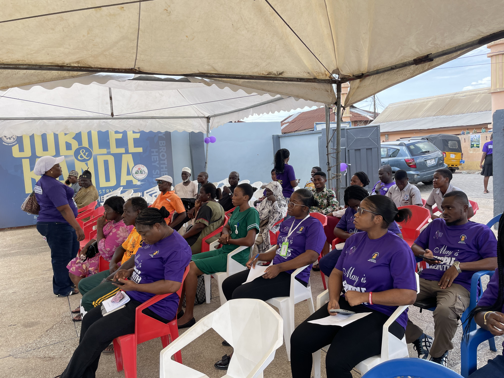
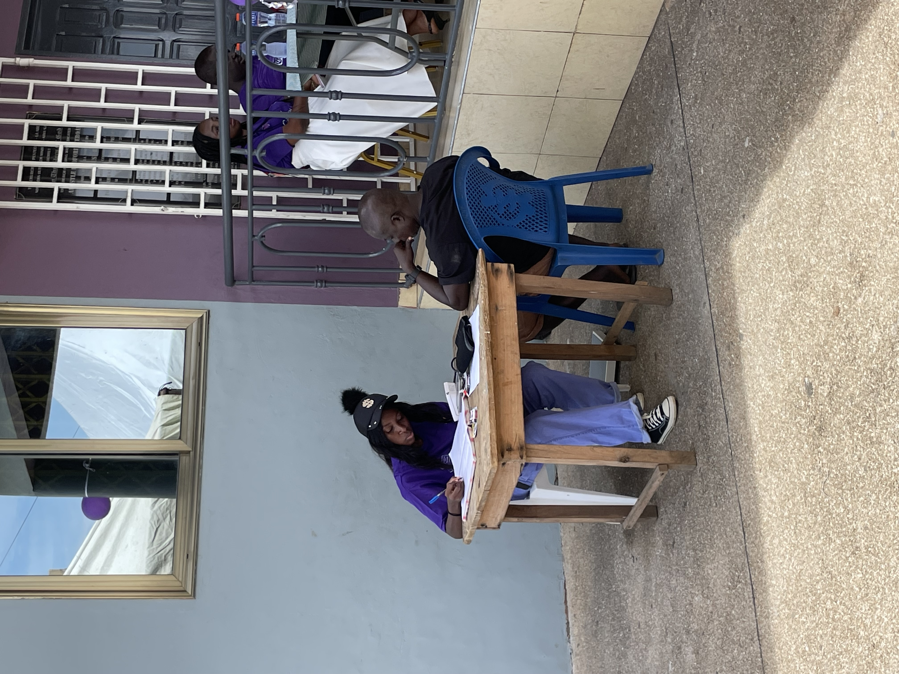
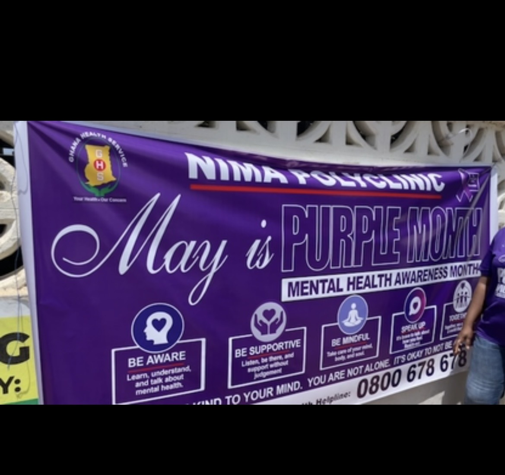

Email: enyonamklutse@gmail.com
Phone: 0593131502
Location: Kanda Estate
Compassionate and dedicated nursing professional with extensive experience providing high-quality patient care across diverse healthcare settings. Skilled in clinical assessment, patient advocacy, and care coordination, with a proven ability to build trust and deliver evidence-based interventions. Adept at working collaboratively with multidisciplinary teams to improve patient outcomes and ensure safety.
University of Ghana
Graduated: February 2025
37 Military Hospital
July 2025 - Present
Here are some projects I have worked on:



These are a few projects I have had the opportunity to work on.
Available upon request.